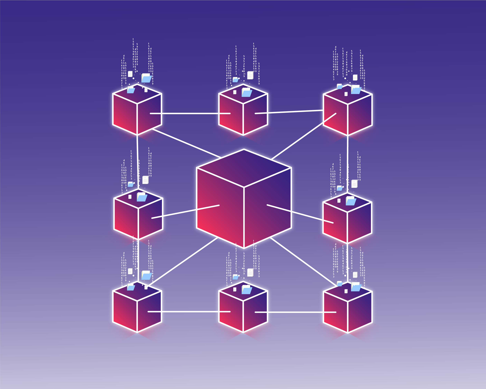

What Is Blockchain?
Blockchain is a decentralized ledger technology (DLT) that facilitates transparent, tamper-proof digital transactions across distributed networks. Originally introduced through Bitcoin, blockchain has evolved into a foundation of a broad range of blockchain-based applications.

Understanding Blockchain
Blockchain is a transformative technology that redefines data storage, verification, and sharing. Ultimately, it is a distributed ledger system, meaning that data is not stored in a single central location, instead shared across a network of computers called nodes. These decentralization features enable direct and secure interactions between untrusted parties.
How Blockchain Started
Blockchain technology emerged in 2008, when Satoshi Nakamoto released the Bitcoin whitepaper introducing a peer-to-peer cryptocurrency that operates using a public, tamper-resistant blockchain ledger to record transactions securely and transparently. Leveraging cryptographic techniques (e.g., SHA-256 hashing) and Proof-of-Work (PoW) consensus enables decentralized transactions without centralized control, and lays the foundation for broader application in the future. It was soon recognized that the blockchain technology has potential beyond currency.
In 2015, Vitalik Buterin created and launched Ethereum, introducing smart contracts—self-executing code stored on the blockchain—which expanded blockchain’s role from a digital ledger to a programmable platform for decentralized applications (dApps). The Ethereum Virtual Machine (EVM) allowed developers to create systems for transferring value, automating agreements, and managing digital ownership.
Since then, blockchain has evolved rapidly with the rise of altcoins, enterprise solutions, and the emergence of Web3 technologies. It now supports innovations across a variety of industries, transforming how we build trust and exchange value in the digital age.